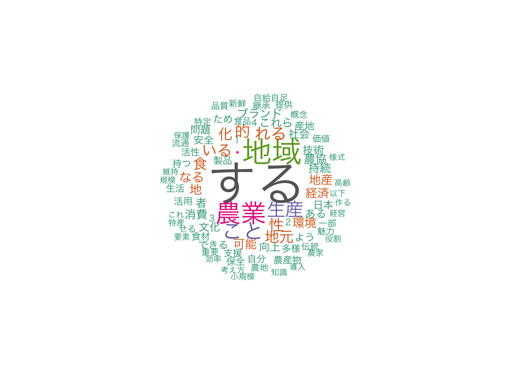

textdata <- gsub("子供", "子ども", textdata)テキストマイニング
テキストマイニングは，大雑把には以下のような手順により，テキストデータを量的に分析する方法です。 なお，このページの説明には多くの間違いがある可能性があります。 間違いを指摘いただければ幸いです。
- テキストデータの収集
- テキストデータの読み込み
- 前処理
- 形態素解析 — 単語文書行列（term-document matrix）の作成
- 分析
1 前処理
テキストマイニングでは前処理が重要です。 前処理は，形態素解析の前に行います。
表記揺れの修正は日本語のテキストマイニングにおいて重要でしょう。 例えば，次のようにします。
もう少し汎用的な処理は正規化と呼ばれる。 例えば，全角と半角を統一することが考えられます。
zenkaku <- "０１２３４５６７８９ａｂｃｄｅｆｇｈｉｊｋｌｍｎｏｐｑｒｓｔｕｖｗｘｙｚＡＢＣＤＥＦＧＨＩＪＫＬＭＮＯＰＱＲＳＴＵＶＷＸＹＺ"
hankaku <- "0123456789abcdefghijklmnopqrstuvwxyzABCDEFGHIJKLMNOPQRSTUVWXYZ"
hankana <- "｡｢｣､･ｦｧｨｩｪｫｬｭｮｯｰｱｲｳｴｵｶｷｸｹｺｻｼｽｾｿﾀﾁﾂﾃﾄﾅﾆﾇﾈﾉﾊﾋﾌﾍﾎﾏﾐﾑﾒﾓﾔﾕﾖﾗﾘﾙﾚﾛﾜﾝﾞﾟ"
zenkaku_kana <- "。「」、・ヲァィゥェォャュョッーアイウエオカキクケコサシスセソタチツテトナニヌネノハヒフヘホマミムメモヤユヨラリルレロワン゛゜"
kana_dakuten_nashi <- "ウカキクケコサシスセソタチツテトハヒフヘホ"
kana_dakuten_ari <- "ヴガギグゲゴザジズゼゾダヂヅデドバビブベボ"
kana_handakuten_nashi <- "ハヒフヘホ"
kana_handakuten_ari <- "パピプペポ"
zenkaku <- unlist(strsplit(zenkaku, NULL))
hankaku <- unlist(strsplit(hankaku, NULL))
hankana <- unlist(strsplit(hankana, NULL))
zenkaku_kana <- unlist(strsplit(zenkaku_kana, NULL))
kana_dakuten_nashi <- unlist(strsplit(kana_dakuten_nashi, NULL))
kana_dakuten_ari <- unlist(strsplit(kana_dakuten_ari, NULL))
kana_handakuten_nashi <- unlist(strsplit(kana_handakuten_nashi, NULL))
kana_handakuten_ari <- unlist(strsplit(kana_handakuten_ari, NULL))
for (i in names(df)) {
for (j in 1:length(zenkaku)) {
df[, i] <- gsub(zenkaku[j], hankaku[j], df[, i])
}
for (j in 1:length(hankana)) {
df[, i] <- gsub(hankana[j], zenkaku_kana[j], df[, i])
}
for (j in 1:length(kana_dakuten_nashi)) {
df[, i] <- gsub(paste0(kana_dakuten_nashi[j], "゛"), kana_dakuten_ari[j], df[, i])
}
for (j in 1:length(kana_handakuten_nashi)) {
df[, i] <- gsub(paste0(kana_handakuten_nashi[j], "゜"), kana_handakuten_ari[j], df[, i])
}
}濁点と半濁点以外の正規化は，次のコマンドでできるようである（詳細な確認はしていない）。
library(audubon)
audubon::strj_normalize(textdata)環境によっては文字コードを変換する必要がある場合もあります。 文字コードがUTF-8でない場合にUTF-8に変換するようにすればよいでしょう。
iconv(textdata, from = "CP932", to = "UTF-8")2 MeCab
最初に，形態素解析エンジン MeCab をパソコンにインストールします。 MeCab: Yet Another Part-of-Speech and Morphological Analyzer から，MeCab本体とMeCab用の辞書（IPA辞書）をダウンロードしてください。 続いて，ダウンロードしたファイルをインストールします。 Windowsの場合，インストール時に辞書の文字コードを選択する画面が表示されます。 迷ったら，URF-8でよいでしょう。 macOSの場合はSourceをダウンロードして，UNIXと同じ方法でインストールしてください。
以下では，Rから MeCab を使う方法を2つ紹介します。
2.1 RMecab
まず，RMecab パッケージを使う方法です。
RMecab は CRAN にはありませんので，次のコマンドでパッケージをインストールします。
install.packages("RMeCab", repos = "http://rmecab.jp/R")正しくインストールできた場合，以下のようにすると，意図した結果が得られます。
library(RMeCab)
sumomo <- "すもももももももものうち"
res <- RMeCab::RMeCabC(sumomo)
unlist(res) 名詞 助詞 名詞 助詞 名詞 助詞 名詞
"すもも" "も" "もも" "も" "もも" "の" "うち" 正常に動作することが確認できたら，次に，テキストファイルを読んで，単語文書行列を作成してみます。 docMatrix() の最初の引数には，テキストファイルのあるディレクトリを指定します。
dirname <- "../data/sampleJP"
tdm <- RMeCab::docMatrix(dirname, pos = c("名詞", "形容詞", "副詞", "動詞"), weight = "")file = ../data/sampleJP/sampleJP1.txt
file = ../data/sampleJP/sampleJP2.txt
file = ../data/sampleJP/sampleJP3.txt
file = ../data/sampleJP/sampleJP4.txt
Term Document Matrix includes 2 information rows!
whose names are [[LESS-THAN-1]] and [[TOTAL-TOKENS]]
if you remove these rows, run
result[ rownames(result) != "[[LESS-THAN-1]]" , ]
result[ rownames(result) != "[[TOTAL-TOKENS]]" , ]tdmatrix <- as.data.frame.matrix(tdm)
colnames(tdmatrix) <- sub("\\.txt", "", colnames(tdmatrix))
tdmatrix <- tdmatrix[rownames(tdmatrix) != "[[LESS-THAN-1]]", , drop = FALSE]
tdmatrix <- tdmatrix[rownames(tdmatrix) != "[[TOTAL-TOKENS]]", , drop = FALSE]
quoted_rows <- grep("\"", row.names(tdmatrix))
if (length(quoted_rows) > 0) {
tdmatrix <- tdmatrix[-quoted_rows, , drop = FALSE]
}
tdmatrix <- tdmatrix[order(rowSums(tdmatrix), decreasing = TRUE), , drop = FALSE]
word_freqs <- data.frame(freq = rowSums(tdmatrix))分析結果を可視化する方法として，最も単純なものとして，ワードクラウドがあります。
library(wordcloud)
library(RColorBrewer)
wordcloud(row.names(word_freqs), word_freqs[[1]], random.order = FALSE, rot.per = 0, colors = brewer.pal(8, "Dark2"))
一般名詞が目立つのが気になります。 これは，ストップワードを削除することで対応できます。
2.2 RcppMeCab
次に，RcppMeCab パッケージを使う方法です。
インストールは，CRAN からできます。 ただし，RでMeCab（RcppMeCab）を利用して形態素解析する方法 で説明されているとおり，CRAN の更新は止まっているようです。 開発版の方がいいかもしれません。
install_github("junhewk/RcppMeCab")正しくインストールできた場合，以下のようにすると，意図した結果が得られます。
library(RcppMeCab)
res <- RcppMeCab::pos(sumomo, join = FALSE)
res$すもももももももものうち
名詞 助詞 名詞 助詞 名詞 助詞 名詞
"すもも" "も" "もも" "も" "もも" "の" "うち" RcppMeCab::pos(sumomo, format = "data.frame") doc_id sentence_id token_id token pos subtype
1 1 1 1 すもも 名詞 一般
2 1 1 2 も 助詞 係助詞
3 1 1 3 もも 名詞 一般
4 1 1 4 も 助詞 係助詞
5 1 1 5 もも 名詞 一般
6 1 1 6 の 助詞 連体化
7 1 1 7 うち 名詞 非自立path <- "../data/sampleJP"
filenames <- list.files(path, full.names = TRUE)
out <- list()
for (i in filenames) {
out[sub(paste0(path, "/"), "", i)] <- paste(readLines(i), collapse = "")
}
head(RcppMeCab::pos(out[[1]], format = "data.frame")) doc_id sentence_id token_id token pos subtype
1 1 1 1 日本 名詞 固有名詞
2 1 1 2 の 助詞 連体化
3 1 1 3 地域 名詞 一般
4 1 1 4 農業 名詞 一般
5 1 1 5 は 助詞 係助詞
6 1 1 6 、 記号 読点2.3 gibasa
最後に，gibasa パッケージを使う方法です。
このパッケージには MeCab のソースコードが含まれています。 ただし，辞書は別途用意する必要があるようです。 上記手順で MeCab をインストールしていれば，辞書のインストールと設定は必要ありません。 辞書のパスは以下のコマンドで分かります。
library(gibasa)
gibasa::dictionary_info() file_path charset lsize rsize size type
1 /usr/local/lib/mecab/dic/ipadic/sys.dic utf8 1316 1316 392126 0
version
1 102それっぽいものが返ってくれば，gibasa が使えます。
形態素解析は次のようなコマンドを実行します。
gibasa::tokenize(sumomo)# A tibble: 7 × 5
doc_id sentence_id token_id token feature
<fct> <int> <int> <chr> <chr>
1 1 1 1 すもも 名詞,一般,*,*,*,*,すもも,スモモ,スモモ
2 1 1 2 も 助詞,係助詞,*,*,*,*,も,モ,モ
3 1 1 3 もも 名詞,一般,*,*,*,*,もも,モモ,モモ
4 1 1 4 も 助詞,係助詞,*,*,*,*,も,モ,モ
5 1 1 5 もも 名詞,一般,*,*,*,*,もも,モモ,モモ
6 1 1 6 の 助詞,連体化,*,*,*,*,の,ノ,ノ
7 1 1 7 うち 名詞,非自立,副詞可能,*,*,*,うち,ウチ,ウチここで，macOSだと次のエラーメッセージとともにエラーが返ってくることがある。
*** caught segfault *** address 0x9ffffffe7, cause ‘invalid permissions’
これはメモリの問題で，おそらく Apple silicon のみ起こる現象のようである。 同じ Apple silicon でも，RStudio だとエラーにならず，処理が完了する。 このコマンドを R で実行するにはどうすべきか，今のところ分からない。
dat_txt <-
tibble::tibble(
doc_id = seq_along(out) |> as.character(),
text = out
) |>
dplyr::mutate(text = audubon::strj_normalize(text))
dat <- gibasa::tokenize(dat_txt, text, doc_id)
reactable::reactable(dat, compact = TRUE)dat |>
gibasa::prettify(col_select = c("POS1", "Original")) |>
dplyr::filter(POS1 %in% c("名詞", "形容詞", "副詞", "動詞"))# A tibble: 1,023 × 6
doc_id sentence_id token_id token POS1 Original
<fct> <int> <int> <chr> <chr> <chr>
1 1 1 1 日本 名詞 日本
2 1 1 3 地域 名詞 地域
3 1 1 4 農業 名詞 農業
4 1 1 7 以下 名詞 以下
5 1 1 9 よう 名詞 よう
6 1 1 11 問題 名詞 問題
7 1 1 13 直面 名詞 直面
8 1 1 14 し 動詞 する
9 1 1 16 い 動詞 いる
10 1 1 19 1 名詞 <NA>
# ℹ 1,013 more rowsトークンをまとめて新しいトークンにすることができる。
reactable::reactable(gibasa::prettify(dat, col_select = c("POS1", "POS2", "POS3")), compact = TRUE)reactable::reactable(gibasa::prettify(dat, col_select = c("POS1", "POS2", "POS3")), compact = FALSE)dat |>
gibasa::prettify(col_select = c("POS1", "POS2", "POS3", "Original")) |>
gibasa::collapse_tokens(
(POS1 %in% c("名詞", "形容詞", "副詞", "動詞") & !stringr::str_detect(token, "^[あ-ン]+$")) |
(POS1 %in% c("名詞", "形容詞") & POS2 %in% c("自立", "接尾", "数接続"))
)# A tibble: 1,511 × 4
doc_id sentence_id token_id token
<fct> <int> <int> <chr>
1 1 1 1 日本
2 1 1 2 の
3 1 1 3 地域農業
4 1 1 4 は
5 1 1 5 、
6 1 1 6 以下
7 1 1 7 の
8 1 1 8 よう
9 1 1 9 な
10 1 1 10 問題
# ℹ 1,501 more rowsこれは非常に便利であるが，どうしてこうした結果が得られるのか，今のところ理解できていない。
dat_count <- dat |>
gibasa::prettify(col_select = c("POS1", "POS2", "POS3", "Original")) |>
gibasa::collapse_tokens(
(POS1 %in% c("名詞", "形容詞", "副詞", "動詞") & !stringr::str_detect(token, "^[ァ-ヴ\\s]+$")) |
(POS1 %in% c("名詞", "形容詞") & POS2 %in% c("自立", "接尾", "数接続"))
) |>
dplyr::mutate(
doc_id = forcats::fct_drop(doc_id),
token = token
) |>
dplyr::count(doc_id, token)
dat_count# A tibble: 572 × 3
doc_id token n
<fct> <chr> <int>
1 1 1.若者 1
2 1 1.高齢化:日本 1
3 1 2.農地 1
4 1 2.農地集積 1
5 1 3.小規模経営 1
6 1 3.技術革新 1
7 1 4.地域 1
8 1 4.技術革新 1
9 1 AI 1
10 1 、 19
# ℹ 562 more rows文書単語行列は次のように作成する。
dtm <- dat_count |>
tidytext::cast_sparse(doc_id, token, n)
dtm[, 1:7]4 x 7 sparse Matrix of class "dgCMatrix"
1.若者 1.高齢化:日本 2.農地 2.農地集積 3.小規模経営 3.技術革新 4.地域
1 1 1 1 1 1 1 1
2 . . . . . . .
3 . . . . . . .
4 . . . . . . .